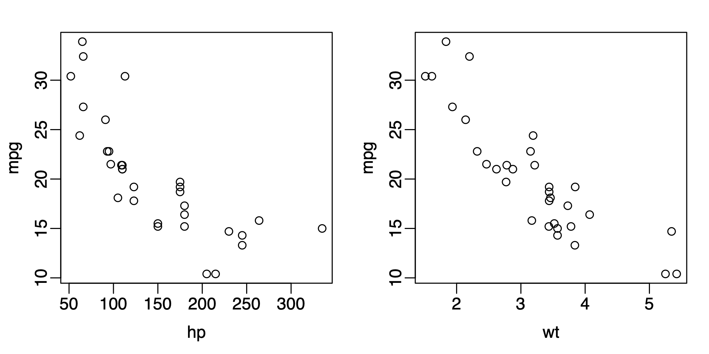
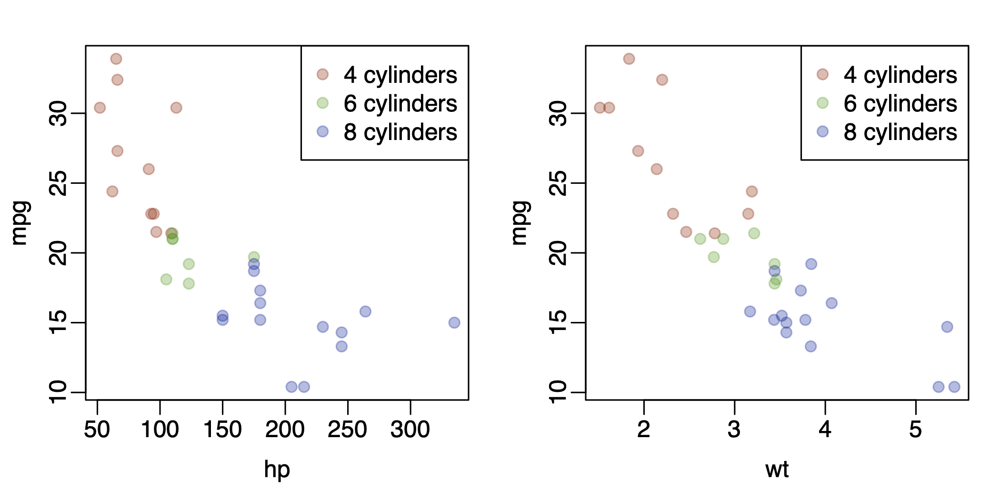
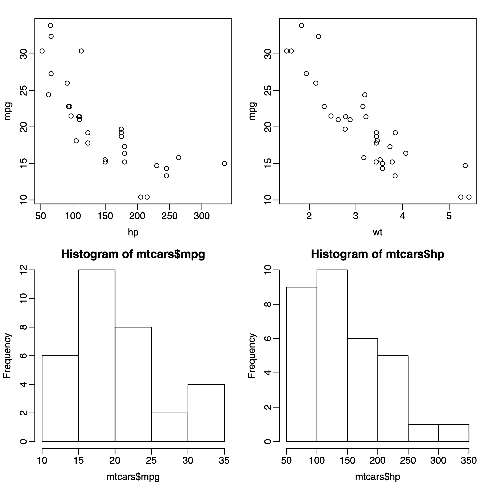
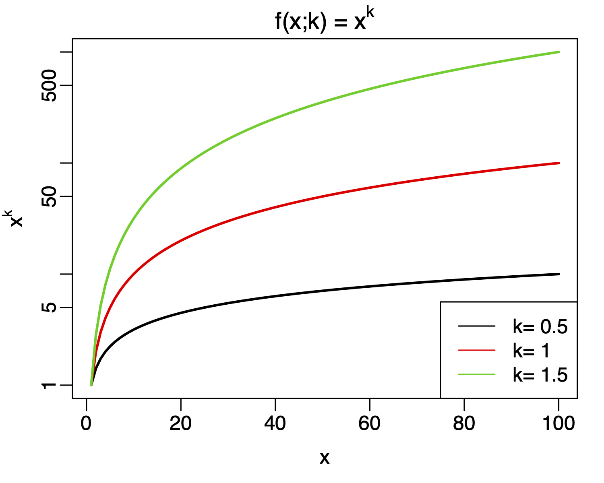

Generate the mathematical notations listed in https://www.calvin.edu/%7Erpruim/courses/s341/S17/from-class/MathinRmd.html.
Generate 100 random numbers from uniform distribution ranging from 0 to 10.
- Draw the histogram of the numbers.
- Compute the mean, median, variance, and standard deviation of these numbers.
Generate 100 random numbers from normal distribution with mean 10 and standard deviation 2.
- Draw the histogram of the numbers.
- Compute the mean, median, variance, and standard deviation of these numbers.
Coint toss simulation:
- Simulate 100 random coin tosses for a fair coin, using the
samplefunction. How many heads do you get? How many do you expect to get? - Repeat the above (100 random coin tosses) for 1000 times, that is,
in a trial, you toss the coin for 100 times and record the number of
heads. You do it again and again for 1000 times (so in total you’ll toss
the coin for 100,000 times). At the end, you will have 1000 numbers (for
the numbers of heads in each trial). You can do this in a loop, and call
samplefunction in the loop. - Draw the histogram for the numbers of heads from all trials. Does it look similar? Yes, it looks like the bell-shaped curve (normal distribution). This is the amazing law of the large number, i.e., the means of a group of numbers (whatever it is) converges to a normal distribution.
Dice rolling simulation:
- Assume you have a fair dice (six sides with numbers 1-6). Simulate
100 dice rolling, using
samplefunction. Report the number of times you see each side (using thetablefunction). - Assume you have two fair dice. You roll them at the same time and record the sum of the numbers from both dice. Simulate 100 such throwing, and report the numbers you get.
Based on the mtcars data frame,
- Generate one figure with 2 panels for mpg vs hp and mpg vs wt. I expect to see a figure like the following

- Use different colors in the above figure for cars with different
numbers of cyl. I want you to play with different color options, but
finally use some transparent color in solid points (hint, the point type
is
pch=19). I expect to see something like the following (colors don’t have to be exactly the same):

- Generate a figure with 4 panels in a 2x2 layout. I expect to see a figure like the following:

Put math expression in figures. Generate a figure for power
function
. Show
the curves for k=0.5, 1, 1.5 in the same figure. In the figure, You
should:
- show all 3 lines with different colors. You can check out the
matplotfunction to draw multiple lines together.
- Use log scale for y-axis. Hint: this can be achieved by specifying
log="y"in theplot. - Use math expression as axis labels.
- Provide legend for lines.
The following codes will get you started. But you need to modify the
parameters in the matplot function.
x = 1:100
y1 = x^0.5
y2 = x^1
y3 = x^1.5
matplot(x, cbind(y1, y2, y3), type="l", lty=1, log="y", lwd=2)I expect to see a figure like the following:
